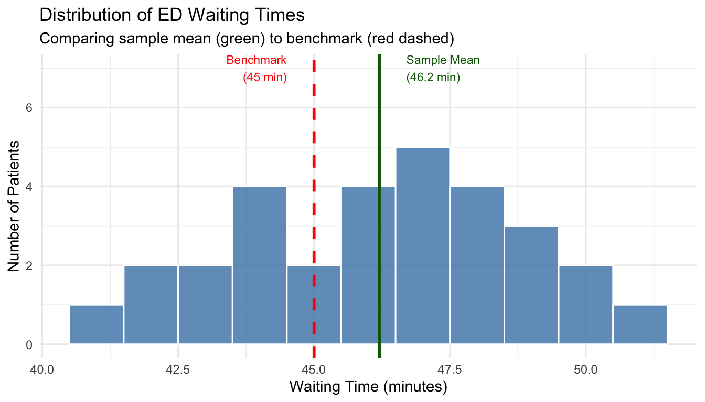
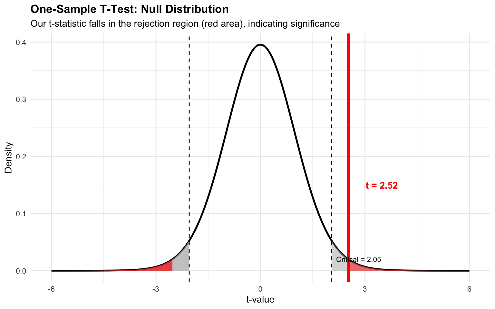
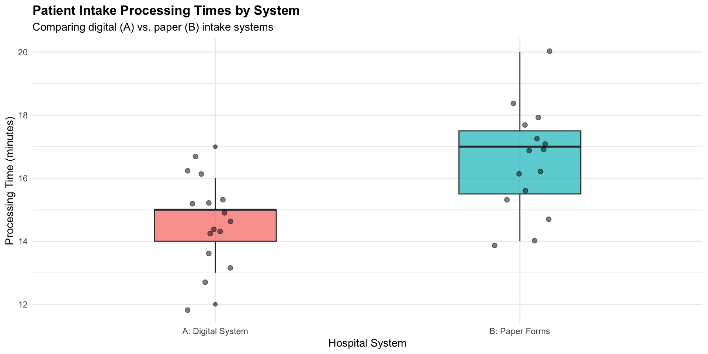
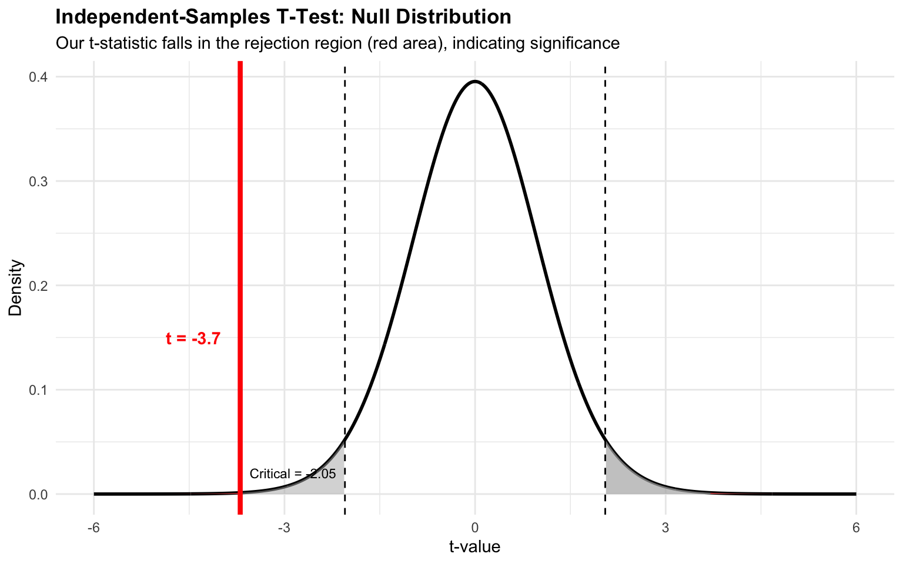
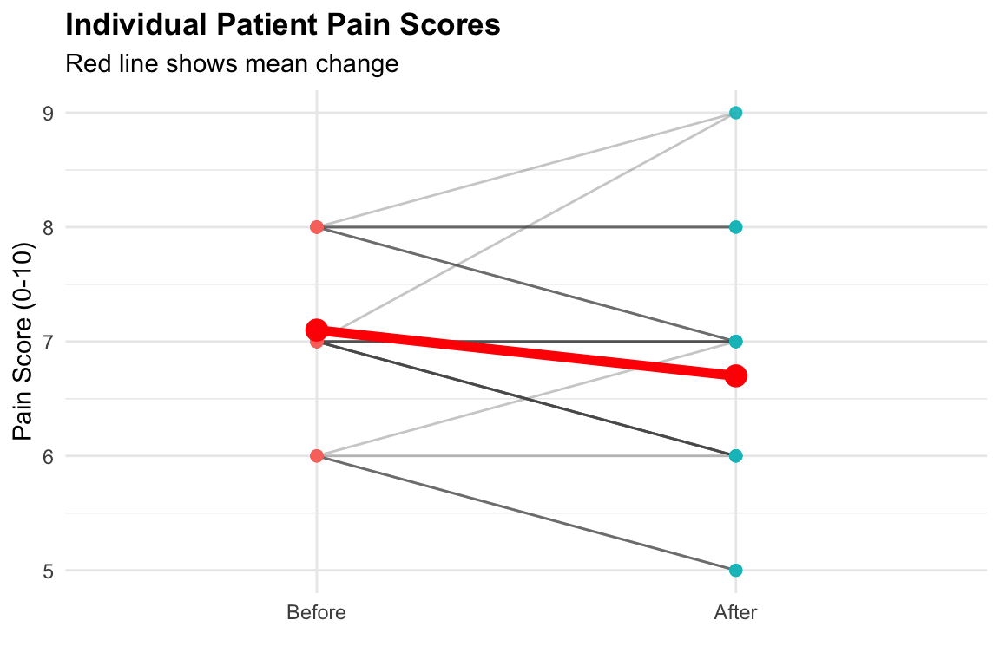
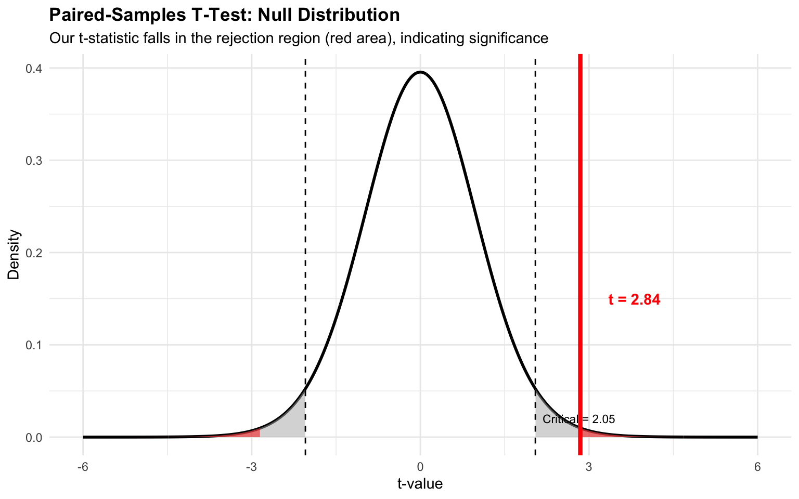

# Load required packages
library(ggplot2)
library(dplyr)
library(parameters)
library(gridExtra)
# Set seed for reproducibility
set.seed(2026)
# Demonstration dataset
hospital_ops <- read.csv("https://raw.githubusercontent.com/mba642-spring-26/mba642-spring-26.github.io/refs/heads/main/datasets/week05_demo_data.csv")
# Practice dataset
patient_outcomes <- read.csv("https://raw.githubusercontent.com/mba642-spring-26/mba642-spring-26.github.io/refs/heads/main/datasets/week05_practice_data.csv")Mean Comparison 1: t-Tests
MBA642: Business Analytics in Healthcare Management
Introduction to t-tests
Why t-tests Matter
t-tests are among the most fundamental and widely-used statistical tools that allow us to make data-driven decisions by comparing means and determining whether observed differences are simply due to chance or not.
Consider this scenario:
A hospital administrator notices that their emergency department’s average waiting time appears to be 52 minutes, while the regional standard is 45 minutes. Is this 7-minute difference a systematic problem that needs addressing, or could it simply be random variation in the data? This is exactly the type of question that t-tests help us answer.
t-tests are to compare means. Specifically, they determine whether observed mean differences are statistically significant—that is, whether the differences we see in our sample data likely reflect true differences in the population, or whether they could have occurred simply by chance. This distinction is critical because acting on random noise can waste resources, while ignoring real problems can harm outcomes.
Overview of the Three t-Test Types
There are three types of t-tests, each designed for different research scenarios:
| Test Type | Purpose | Example |
|---|---|---|
| One-sample | Compare a sample mean to a known or hypothesized value | Testing if average wait time differs from a 45-minute standard |
| Independent-samples | Compare means from two separate, unrelated groups | Comparing processing times between two different intake systems |
| Paired-samples | Compare two related measurements on the same subjects | Measuring scores before and after an intervention |
- The following sections will explain each test in detail, with worked examples and R code that you can apply to your own data.
Datasets for Today
We’ll use two datasets throughout this lecture: one for demonstrations and one for practice activities.
Load the datasets and required packagesusing the code below.
Dataset Variables
hospital_ops (Demonstration Data)
| Variable | Description |
|---|---|
patient_id |
Unique patient identifier |
ed_wait_time |
ED waiting time (minutes) |
intake_hospital |
Hospital system (A=Digital, B=Paper) |
intake_time |
Patient intake processing time (minutes) |
pain_before, pain_after |
Pain scores (0-10 scale) |
patient_outcomes (Practice Data)
| Variable | Description |
|---|---|
patient_id |
Unique patient identifier |
satisfaction |
Patient satisfaction (1-10 scale) |
protocol_group |
Clinical protocol (New = Enhanced Recovery, Standard = Standard Care) |
length_of_stay |
Hospital stay (days) |
bp_before, bp_after |
Systolic blood pressure (mmHg) |
1. One-Sample t-Test
What is it?
A one-sample t-test is a statistical procedure that compares a sample mean to a known or hypothesized population value. It answers a fundamental question:
- Is our sample mean significantly different from a specific benchmark, or could the difference we observe be due to random chance?
This test is particularly useful when you have a single group of observations and want to compare their average to some external standard or target value. For example, if there is a law regarding a maximum acceptable waiting time, or if industry benchmarks establish expected performance levels, the one-sample t-test helps you determine whether your organization is meeting those standards.
Key Components
- One group of observations (your sample data)
- One comparison value (a benchmark, standard, target, or known or hypothesized mean)
The test works by calculating how far your sample mean deviates from the comparison value, relative to the variability in your data. If this deviation is large enough, we conclude that the difference is unlikely to have occurred by chance alone.
When to Use It
The one-sample t-test is appropriate whenever you need to compare your data against a fixed reference point. Common scenarios include:
- Comparing performance against national or industry benchmarks
- e.g.,) average length of stay compared to national average
- Testing if outcomes meet target levels set by management or regulators
- e.g.,) patient satisfaction scores vs. a target of 8.0
- Evaluating if measurements achieve recommended standards
- e.g.,) medication dosages achieving target blood levels
- Assessing if operational metrics meet regulatory requirements
- e.g.,) waiting times vs. regulatory standards
One-Sample t-test Scenario: ED Waiting Times
Imagine you are an administrator at a hospital where the regional average emergency department waiting time is 45 minutes. Recently, you’ve received complaints that patients are waiting too long. To investigate, you randomly sample 30 patients and record their waiting times.
Your sample shows an average waiting time of 52 minutes. But before concluding that there’s a problem (i.e., the hospital is underperforming), you need to ask:
- Is this difference of 7 minutes statistically significant, or could it simply be due to the natural variation we’d expect when taking a random sample?
This is precisely what the one-sample t-test will help us determine.
Hypotheses
For our ED waiting times scenario, we set up our hypotheses as:
- Null Hypothesis (H₀): μ = 45 (The hospital’s mean waiting time equals the 45-minute regional standard)
- Alternative Hypothesis (H₁): μ ≠ 45 (The hospital’s mean waiting time differs from the standard)
The t-test will help us decide whether to reject H₀ based on our sample data.
The Formula
The t-statistic is calculated as:
\[t = \frac{\bar{X} - \mu_0}{s / \sqrt{n}}\]
Where:
- \(\bar{X}\): sample mean (e.g., 52 minutes in our scenario)
- \(\mu_0\): hypothesized/known mean (e.g., 45-minute benchmark)
- \(s\): sample standard deviation (measures the spread of your data)
- \(n\): sample size (e.g., 30 patients in our scenario)
Understanding the Formula
The t-statistic essentially measures how many standard errors the sample mean is away from the hypothesized value. Let’s break this down:
The numerator (\(\bar{X} - \mu_0\)) represents the difference between what we observed and what we expected under the null hypothesis. A larger difference suggests our sample may come from a population with a different mean.
The denominator (\(s / \sqrt{n}\)) is the standard error of the mean, which tells us how much variability we’d expect in sample means due to random sampling. Dividing by this standardizes our difference, allowing us to assess whether it’s large relative to the expected sampling variation.
A t-statistic close to zero means our sample mean is close to the benchmark. A t-statistic far from zero (either positive or negative) means our sample mean differs substantially from the benchmark, relative to the variability in our data.
Example Calculation
Let’s work through a concrete example using our demonstration dataset. We have waiting times from 30 randomly selected ED patients:
# Extract ED waiting times from our dataset
waiting_times <- hospital_ops$ed_wait_time
mu_0 <- 45 # benchmark (regional average)
# Calculate statistics
n <- length(waiting_times)
x_bar <- mean(waiting_times)
s <- sd(waiting_times)
# Calculate t-statistic manually
t_stat <- (x_bar - mu_0) / (s / sqrt(n))Sample size: 30Sample mean: 46.2 minutesSample SD: 2.61 Standard error: 0.48t-statistic: 2.52The t-statistic tells us how many standard errors our sample mean (approximately 46 minutes) is away from the benchmark (45 minutes). A large absolute t-value suggests the difference is unlikely to be due to chance.
Visualizing the Data
Before running a statistical test, it’s always good practice to visualize your data. A histogram helps us understand the distribution of ED waiting times:
ggplot(hospital_ops, aes(x = ed_wait_time)) +
geom_histogram(binwidth = 1, fill = "steelblue", color = "white", alpha = 0.8) +
geom_vline(xintercept = mu_0, color = "red", linetype = "dashed", linewidth = 1) +
geom_vline(xintercept = x_bar, color = "darkgreen", linewidth = 1) +
annotate("text", x = mu_0 - 0.5, y = 7, label = "Benchmark\n(45 min)",
color = "red", hjust = 1, size = 3) +
annotate("text", x = x_bar + 0.5, y = 7, label = paste0("Sample Mean\n(", round(x_bar, 1), " min)"),
color = "darkgreen", hjust = 0, size = 3) +
labs(title = "Distribution of ED Waiting Times",
subtitle = "Comparing sample mean (green) to benchmark (red dashed)",
x = "Waiting Time (minutes)", y = "Number of Patients") +
theme_minimal()
The visualization shows that most waiting times cluster between 42-50 minutes, and our sample mean (green line) is clearly above the 45-minute benchmark (red dashed line).
Visualizing the Null Distribution
Visualizing what we would expect to see if the null hypothesis were true (i.e., if the true population mean really were 45 minutes) helps us understand hypothesis testing. This is called the null distribution.
The graph below shows the t-distribution under the null hypothesis. The gray shaded areas in the tails represent the rejection regions; if our calculated t-statistic falls in these regions, we reject the null hypothesis at the α = 0.05 significance level.

Notice that our calculated t-statistic (the red vertical line) falls into the right rejection region. This tells us visually that our sample mean is significantly different from the benchmark (i.e., such an extreme result would be very unlikely if the true mean were actually 45 minutes).
Conducting one-sample t-test in R
In practice, we use R’s built-in t.test() function rather than calculating everything manually. This function handles all the computations and provides a complete summary of results:
# Perform one-sample t-test
result <- t.test(hospital_ops$ed_wait_time, mu = 45)
parameters(result)One Sample t-test
Parameter | Mean | mu | Difference | 95% CI | t(29) | p
-----------------------------------------------------------------------
ed_wait_time | 46.20 | 45 | 1.20 | [45.23, 47.17] | 2.52 | 0.017
Alternative hypothesis: true mean is not equal to 45Interpreting the Output
Let’s break down what each part of the output means:
t-statistic (2.52): This measures how far our sample mean is from the hypothesized value in standard error units. Our value is quite large, indicating a substantial deviation.
df (degrees of freedom = 29): This equals n - 1 and determines the shape of the t-distribution used for calculating the p-value.
p-value (0.0174): This is the probability of observing a t-statistic as extreme as ours (or more extreme) if the null hypothesis were true. Our very small p-value indicates this would be extremely unlikely.
95% confidence interval [45.23, 47.17]: We are 95% confident that the true population mean lies within this range. Because 45 is not contained in this interval, we can reject the null hypothesis.
Sample mean (46.2): The average of our observed waiting times.
Conclusion
Since the p-value is much less than 0.05, we reject the null hypothesis. The evidence strongly suggests that the hospital’s average ED waiting time is significantly higher than the 45-minute regional standard. This finding warrants investigation into the causes of the longer wait times and potential interventions to address the issue.
✏️ Practice: One-Sample t-Test
NoteYour Turn! (5 minutes)
A clinic wants to test if their average patient satisfaction score differs from the national average of 8.0 (out of 10). Use the patient_outcomes dataset.
Step 1: Explore the data
# Extract satisfaction scores from patient_outcomes
satisfaction_scores <- patient_outcomes$___
# Calculate descriptive statistics
cat("Sample size:", length(satisfaction_scores), "\n")
cat("Sample mean:", mean(satisfaction_scores), "\n")
cat("Sample SD:", sd(satisfaction_scores), "\n")Step 2: Visualize the data
# Create a histogram with benchmark line
ggplot(patient_outcomes, aes(x = ___)) +
geom_histogram(binwidth = 1, fill = "steelblue", color = "white") +
geom_vline(xintercept = 8.0, color = "red", linetype = "dashed", linewidth = 1) +
labs(title = "Distribution of Patient Satisfaction Scores",
x = "Satisfaction Score", y = "Count") +
theme_minimal()Step 3: Perform the t-test
# Fill in the blanks (replace ___ with appropriate values)
result_satisfaction <- t.test(___, mu = ___)
parameters(result_satisfaction)Questions:
- Based on the p-value, is there a significant difference from the national average?
2. Independent-Samples t-test
What is it?
An independent-samples t-test (also called a two-sample t-test) compares means from two different, unrelated groups to determine if they are significantly different from each other. Unlike the one-sample t-test where we compare against a fixed benchmark, here we’re asking:
- Are these two group means significantly different from each other, or could the observed difference be due to random variation?
This test is fundamental for comparing any two distinct groups, such as different treatment groups, different facilities, different time periods, or any other meaningful categorization. The key requirement is that the groups must be independent, meaning that the observations in one group have no relationship to the observations in the other group.
Key Requirements
- Two independent groups: The observations in one group must be completely unrelated to those in the other group. (e.g., the behavior of patients at Hospital A does not influence the behavior of patients at Hospital B)
- Continuous outcome variable: The variable you’re measuring (e.g., processing time, satisfaction score, length of stay) must be measured on a continuous scale.
Why “Independent”?
The term “independent” distinguishes this test from the paired-samples t-test, which we will talk about next. In an independent-samples design, each observation belongs to only one group, and there’s no natural pairing between observations across groups. If you measured the same patients before and after treatment, that would require a paired test instead.
When to Use It
The independent-samples t-test is appropriate whenever you want to compare two separate groups. Common scenarios include:
- Comparing treatments: Is a new drug more effective than the standard treatment?
- Comparing facilities or departments: Does one hospital have shorter wait times than another?
- Intervention studies: Did the intervention group have better outcomes than the control group?
- Demographic comparisons: Do outcomes differ between urban and rural facilities?
Independent-Samples t-test Scenario: Comparing Patient Intake Systems
Imagine your health system is considering whether to invest in digital intake systems (the registration process when patients first arrive) across all facilities. Currently, Hospital A uses a digital tablet-based intake system, while Hospital B uses traditional paper forms. Before making a system-wide investment, leadership wants to know:
- Does the digital system actually result in faster processing times?
You collect processing time data from 20 randomly selected patients at each hospital. The question is whether any difference you observe represents a significant difference in system efficiency, or whether it could simply be due to natural variation in processing times.
Hypotheses
For our intake systems comparison:
- Null Hypothesis (H₀): μ₁ = μ₂ (Mean processing time is the same for both systems)
- Alternative Hypothesis (H₁): μ₁ ≠ μ₂ (Mean processing times differ between systems)
The t-test will help us decide whether the observed difference is statistically significant.
The Formula
The t-statistic for an independent-samples t-test is calculated as:
\[t = \frac{\bar{X}_1 - \bar{X}_2}{s_p\sqrt{\frac{1}{n_1} + \frac{1}{n_2}}}\]
Where the pooled standard deviation is:
\[s_p = \sqrt{\frac{(n_1-1)s_1^2 + (n_2-1)s_2^2}{n_1 + n_2 - 2}}\]
Understanding the Formula
Numerator (\(\bar{X}_1 - \bar{X}_2\)): The difference between the two sample means, which is the effect we are trying to evaluate.
Denominator: The standard error of the difference between means. This combines the information about variability from both groups to estimate how much variation we would expect in the difference between sample means due to random sampling.
Pooled standard deviation (\(s_p\)): This is a weighted average of the two groups’ standard deviations. We “pool” them because we assume both groups have the same population variance (homogeneity of variance assumption). The pooling gives more weight to the larger sample.
The resulting t-statistic tells us how many standard errors the observed difference is from zero (i.e., no difference; the same mean in both groups). A large absolute t-value suggests the groups significantly differ.
Example: Comparing Hospital Intake Times
Let’s analyze the processing times from our demonstration dataset using the two hospitals:
# Extract data from our dataset
hospital_A <- hospital_ops$intake_time[hospital_ops$intake_hospital == "A_Digital"]
hospital_B <- hospital_ops$intake_time[hospital_ops$intake_hospital == "B_Paper"]Hospital A (Digital): Mean: 14.53 minutes SD: 1.3 n: 15 Hospital B (Paper): Mean: 16.53 minutes SD: 1.64 n: 15 Difference between two sample means: -2 minutesPooled Standard Deviation: 1.48 t-value: -3.7 Visualizing the Data
Before running our t-test, let’s visualize the distribution of processing times for both hospitals:
# Create grouped data for visualization
intake_viz <- hospital_ops %>%
mutate(hospital_label = ifelse(intake_hospital == "A_Digital",
"A: Digital System", "B: Paper Forms"))
# Box plot with individual points
ggplot(intake_viz, aes(x = hospital_label, y = intake_time, fill = hospital_label)) +
geom_boxplot(alpha = 0.7, width = 0.4) +
geom_jitter(width = 0.1, alpha = 0.5, size = 2) +
labs(title = "Patient Intake Processing Times by System",
subtitle = "Comparing digital (A) vs. paper (B) intake systems",
x = "Hospital System", y = "Processing Time (minutes)") +
theme_minimal() +
theme(legend.position = "none",
plot.title = element_text(face = "bold"))
The box plot clearly shows that Hospital A (digital system) has lower and less variable processing times than Hospital B (paper forms).
Visualizing the Null Distribution

Conducting in R
We can conduct an independent-samples t-test using t.test() with two groups:
# Perform independent samples t-test
# var.equal = TRUE uses pooled variance (Student's t-test)
result_ind <- t.test(hospital_A, hospital_B, var.equal = TRUE)
parameters(result_ind)Two Sample t-test
Parameter1 | Parameter2 | Mean_Parameter1 | Mean_Parameter2 | Difference
------------------------------------------------------------------------
hospital_A | hospital_B | 14.53 | 16.53 | -2.00
Parameter1 | 95% CI | t(28) | p
--------------------------------------------
hospital_A | [-3.11, -0.89] | -3.70 | < .001
Alternative hypothesis: true difference in means is not equal to 0# Alternative syntax using formula
# result_ind_oneset <- t.test(intake_time ~ intake_hospital, data = hospital_ops, var.equal = TRUE)
# parameters(result_ind_oneset)Interpretation
- Mean difference: -2 minutes
- t-statistic: -3.7
- p-value: 0.0009416
- Conclusion: Since p-value < 0.05, we reject the null hypothesis. The digital intake system (Hospital A) has significantly shorter processing times than the paper system (Hospital B).
✏️ Practice: Independent-Samples t-Test
NoteYour Turn! (5 minutes)
A hospital wants to compare the length of stay (in days) between patients receiving a new Enhanced Recovery Protocol (ERP) (which focuses on early mobilization and nutrition to speed up recovery) versus Standard Care. Use the patient_outcomes dataset.
Step 1: Explore the data
# Extract length of stay by group
new_protocol <- patient_outcomes$length_of_stay[patient_outcomes$protocol_group == "___"]
standard_care <- patient_outcomes$length_of_stay[patient_outcomes$protocol_group == "___"]
# Calculate descriptive statistics for both groups
cat("New Protocol: Mean =", round(mean(new_protocol), 2), "days\n")
cat("Standard Care: Mean =", round(mean(standard_care), 2), "days\n")
cat("Difference:", round(mean(new_protocol) - mean(standard_care), 2), "days\n")Step 2: Visualize the data
# Create a box plot comparing both groups
ggplot(patient_outcomes, aes(x = ___, y = ___, fill = ___)) +
geom_boxplot(alpha = 0.7) +
geom_jitter(width = 0.1, alpha = 0.5) +
labs(title = "Length of Stay by Discharge Protocol",
x = "Protocol Type", y = "Length of Stay (days)") +
theme_minimal() +
theme(legend.position = "none")Step 3: Perform the t-test
# Fill in the blanks
result_los <- t.test(___, ___, var.equal = ___)
# or result_los <- t.test(___ ~ ___, data = ___, var.equal = ___)
parameters(result_los)Questions:
- Is the difference in length of stay statistically significant?
- Should the hospital adopt the new discharge protocol based on these results?
3. Paired-Samples T-Test
What is it?
A paired-samples t-test (also called a dependent t-test or matched-pairs t-test) compares two related measurements on the same subjects or matched pairs. Unlike the independent-samples t-test where we compare different groups of people, here we’re asking:
- Is there a significant change within the same individuals between two time points, conditions, or measures?
This test is particularly powerful because by measuring the same subjects twice, we can control for individual differences. Each person serves as their own control, which reduces variability and increases our ability to detect true effects.
Key Characteristic
The data comes in pairs, which means each subject has exactly two measurements that are linked. For example:
- The same patient measured before and after treatment
- The same clinic’s performance in January vs. June
- Twins where one receives treatment and the other serves as control
Why Use Paired Data?
The paired design is statistically more powerful than an independent design because it eliminates the variability across respondents. For example, if we compare pain scores between a treatment group and control group (independent design), differences in pain tolerance between individuals add noise to our data. But if we measure each person’s pain before and after treatment (paired design), individual differences cancel out, and we are only looking at how much each person’s pain perceptions changed.
When to Use It
The paired-samples t-test is appropriate whenever your measurements are somehow related:
- Before-and-after studies (same respondent):
- Pre-treatment vs. post-treatment outcomes
- Before vs. after policy implementation
- Baseline vs. follow-up measurements
- Matched pairs design:
- Twin studies (comparing outcomes between twins)
- Matched control studies (subjects paired on key characteristics)
- Within-subject comparisons:
- Two treatments tested on the same patient (crossover design)
- Morning vs. evening measurements on the same individuals
- Left eye vs. right eye comparisons
Paired-Samples t-test Scenario: Pain Management Protocol
A hospital implemented a new non-pharmacological pain management protocol (integrating guided imagery and music therapy) and wants to evaluate its effectiveness. Rather than comparing different groups of patients (which would introduce confounding variables like age, health status, or pain tolerance), the hospital measures pain scores (0-10 scale) for 30 patients before and after receiving the protocol.
The key question is: Did the protocol significantly reduce pain?
By using the same patients as their own controls, we can isolate the effect of the protocol from individual differences in pain perception and tolerance.
Hypotheses
For our pain management protocol evaluation:
- Null Hypothesis (H₀): μ_D = 0 (The mean difference in pain scores is zero—no change)
- Alternative Hypothesis (H₁): μ_D ≠ 0 (The mean difference is not zero—pain scores changed)
The Formula
The paired t-test analyzes the differences between paired observations:
\[t = \frac{\bar{D}}{s_D / \sqrt{n}}\]
Where:
- \(\bar{D}\): mean of the differences (average change across all subjects)
- \(s_D\): standard deviation of the differences (variability in how much individuals changed)
- \(n\): number of pairs (number of subjects)
Understanding the Formula
Notice that this formula is essentially identical to the one-sample t-test formula! This is because the paired t-test is really just a one-sample t-test performed on the differences. We’re testing whether the mean difference is significantly different from zero.
Instead of working with two sets of measurements (e.g., average before - average after), we first calculate the difference for each pair (e.g., Before - After for each patient). Then we examine whether the average of these differences significantly different from zero.
- If the mean difference is close to zero → no significant difference
- If the mean difference is far from zero (relative to variability) → significant difference
This approach is powerful because it accounts for individual baseline differences. A patient who starts with severe pain and a patient who starts with mild pain are compared only to themselves.
Example: Pain Management Protocol
Let’s analyze the pain scores from our demonstration dataset:
# Extract pain scores from our dataset
before <- hospital_ops$pain_before
after <- hospital_ops$pain_afterBefore treatment: Mean: 7.1 SD: 0.71 After treatment: Mean: 6.7 SD: 1.09 Differences (Before - After): Mean: 0.4 SD: 0.77 t-value: 2.84 Visualizing Paired Data

Visualizing the Null Distribution

Conducting in R
We can conduct a paired-sample t-test using t.test() function with the paired = TRUE argument:
# Perform paired samples t-test
result_paired <- t.test(before, after, paired = TRUE)
parameters(result_paired)Paired t-test
Parameter | Group | Difference | t(29) | p | 95% CI
-------------------------------------------------------------
before | after | 0.40 | 2.84 | 0.008 | [0.11, 0.69]
Alternative hypothesis: true mean difference is not equal to 0Interpretation
- Mean difference: 0.4 points
- t-statistic: 2.845
- p-value: 0.008068
- Conclusion: Since p-value < 0.05, we reject the null hypothesis. The pain management protocol significantly reduced pain scores.
✏️ Practice: Paired-Samples t-test
NoteYour Turn! (5 minutes)
A health clinic wants to evaluate the effectiveness of a lifestyle intervention program (a 12-week program including dietary modification and weekly exercise coaching) on reducing systolic blood pressure. Use the patient_outcomes dataset.
Step 1: Explore the data
# Extract blood pressure data from patient_outcomes
bp_before <- patient_outcomes$___
bp_after <- patient_outcomes$___
# Calculate descriptive statistics
cat("Before: Mean =", round(mean(bp_before), 2), "mmHg\n")
cat("After: Mean =", round(mean(bp_after), 2), "mmHg\n")
cat("Mean difference:", round(mean(bp_before - bp_after), 2), "mmHg\n")Step 2: Visualize the data
# Create a before/after comparison plot
# First, reshape data for plotting
bp_plot_data <- data.frame(
patient_id = rep(patient_outcomes$patient_id, 2),
time = factor(rep(c("Before", "After"), each = nrow(patient_outcomes)),
levels = c("Before", "After")),
bp = c(patient_outcomes$bp_before, patient_outcomes$bp_after)
)
# Create the spaghetti plot
ggplot(bp_plot_data, aes(x = time, y = bp, group = patient_id)) +
geom_line(alpha = 0.3, color = "gray40") +
geom_point(aes(color = time), size = 2) +
stat_summary(aes(group = 1), fun = mean, geom = "line",
linewidth = 2, color = "red") +
stat_summary(aes(group = 1), fun = mean, geom = "point",
size = 4, color = "red") +
labs(title = "Blood Pressure Before vs. After Intervention",
x = "", y = "Systolic BP (mmHg)") +
theme_minimal() +
theme(legend.position = "none")Step 3: Perform the t-test
# Fill in the blanks
result_bp <- t.test(___, ___, paired = ___)
parameters(result_bp)Questions:
- Is the change in blood pressure statistically significant?
- Would you recommend this lifestyle intervention program for blood pressure management?
Choosing the Right t-test
Decision Flowchart
Use this guide to select the appropriate t-test:
| Question | If… | t-Test Type | R Function |
|---|---|---|---|
| Comparing to a known standard/benchmark? | Yes | One-sample t-test | t.test(x, mu = value) |
| Two separate/independent groups? | Yes | Independent-samples t-test | t.test(x, y, var.equal = TRUE) |
| Same subjects measured twice? | Yes | Paired-samples t-test | t.test(x, y, paired = TRUE) |
Summary
| Test | Purpose | Key Points |
|---|---|---|
| One-sample | Compare mean to benchmark | Single group, known standard |
| Independent | Compare two group means | Separate groups, no overlap |
| Paired | Compare related measurements | Same subjects, before/after |
One-sample t-tests help evaluate whether your organization meets industry standards or benchmarks.
Independent-samples t-tests enable evidence-based comparisons between different treatments, departments, or facilities.
Paired-samples t-tests are essential for evaluating the effectiveness of interventions and quality improvement initiatives.
References and Further Reading
Statistical Methods
- Field, A. (2018). Discovering Statistics Using IBM SPSS Statistics (5th ed.). SAGE Publications.
- Navarro, D. (2019). Learning Statistics with R. Available online.
- Wickham, H., & Grolemund, G. (2017). R for Data Science. O’Reilly Media.
Healthcare Applications
Examples are motivated by the followings:
United States Emergency Department Performance on Wait Time and Length of Visit. (2009). PMC. https://pmc.ncbi.nlm.nih.gov/articles/PMC2830619/
Assessing Patient Satisfaction with Hospital Services: Perspectives from Bihor County Emergency Hospital, Romania. (2025). PMC. https://pmc.ncbi.nlm.nih.gov/articles/PMC11988329/
The Impact of Electronic Health Records on Time Efficiency of Physicians and Nurses: A Systematic Review. (2005). PMC. https://pmc.ncbi.nlm.nih.gov/articles/PMC1205599/
Reducing the Length of Stay by Enhancing the Patient Discharge Process: Using Quality Improvement Tools to Optimize Hospital Efficiency. (2021). PMC. https://pmc.ncbi.nlm.nih.gov/articles/PMC10229011/
Studying Protocol-Based Pain Management in the Emergency Department. (2017). PMC. https://pmc.ncbi.nlm.nih.gov/articles/PMC5663136/
Comprehensive Lifestyle Modification and Blood Pressure Control: A Review of the PREMIER Trial. (2004). PMC. https://pmc.ncbi.nlm.nih.gov/articles/PMC8109651/